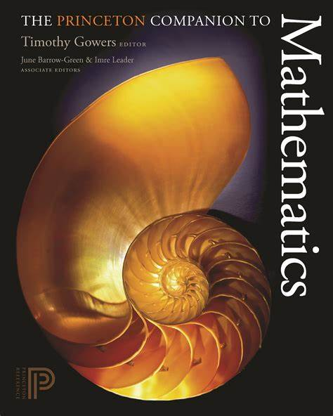
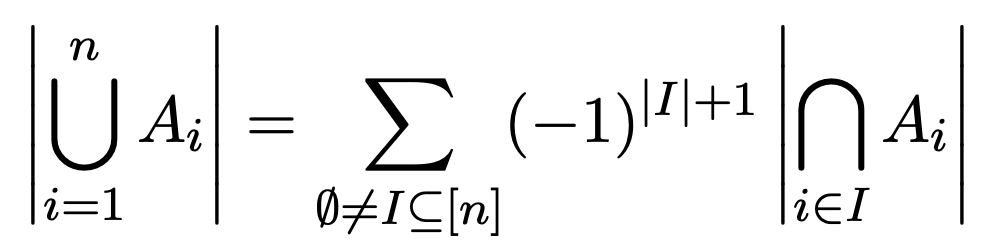
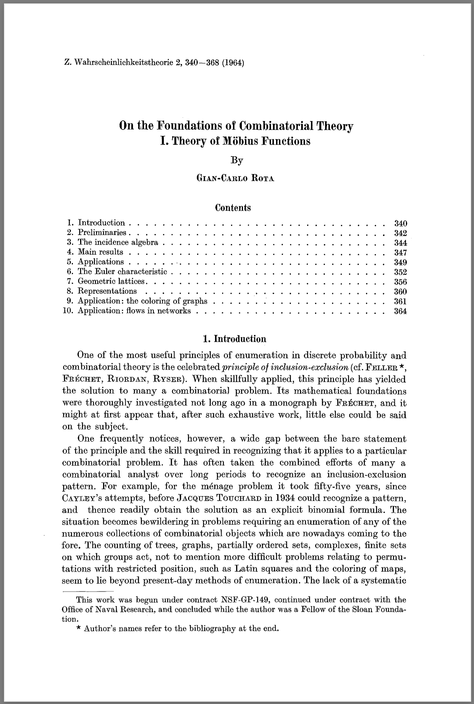

开场
我已经没什么好开场的了 😂
- 数学类的课最难讲
- 他们每次都甩锅给我
那就开幕雷击吧：你所需要的一切数学 (不要再来找我了)

枚举基本定理与计数
枚举基本定理
$$ |A| = \sum_{a \in A} 1 $$
(这有用吗 😂😂😂)
- 解释了加法和乘法的本质 (加法/乘法原理)
- $\Sigma$ 是 “求和程序”
- 提示我们寻找 $A \mapsto B$ 的一一映射，那么 $|A| = |B|$
计数的本质
计数的本质是
集合 的生成 (枚举)。
$$ |A| = \sum_{a \in A} 1 $$
扩展到两个集合
- 加法原理：$|A \cup B| = |A| + |B|$ (当 $A\cap B=\varnothing$ 时成立)
- 乘法原理：$|A \times B| = |A| \cdot |B|$
为什么是 “原理”？
因为通用
几乎所有的计数问题都是在用加法原理- 不仅是 “原理”，而且是加法和乘法的 “定义”
Inductive nat : Type :=
| O
| S (n : nat).
Fixpoint plus (n : nat) (m : nat) : nat :=
match n with
| O ⇒ m
| S n' ⇒ S (plus n' m)
end.
二进制串计数 (0)
$n$-bit 二进制串一共有多少个？
- 当然是 $2^n$ (乘法原理)
- 另一种理解方法：
- 我们可以把集合分成两个部分，“0” 开头的和 “1” 开头的
- 剩下的部分存在一个一一对应
- $f(n) = 2f(n-1)$, $f(0)=1$

二进制串计数 (1)
$n$-bit 二进制串中 “0” 比 “1” 多的一共有多少个？
“加法原理”
$$ {n \choose n} + {n \choose n-1} + \ldots + {n \choose \lfloor n/2 \rfloor + 1} $$
二进制串计数 (2)
如果把 0 看作 “(”、1 看作 “)”，配对的括号序列有多少个？
(()) - 0011;)()()(-101010
排列计数 (0)
求 $1, 2, \ldots, n$ 所有排列的数量
- 不就是 $n!$ 吗 😂
- 其实这个构造不算太显然
- 例子：可以把 $n$ 个数分成 $k$ 和 $n-k$ 两组
排列计数 (1)
错位排列：求所有 $1, 2, \ldots n$ 的排列中，每个数字都不在原位的排列数量
还记得 “集合” 吗？
- 把集合写出来呀！
from itertools import permutations
n = 4
for p in permutations(list(range(n)), n):
if True not in [p[i] == i for i in range(n)]:
print([x+1 for x in p])
容斥原理 (PIE)
集合视角的计数
加法原理
$$ |A \cup B| = |A| + |B| $$
成立条件：$A\cap B=\varnothing$
“互相存在关联” 的 $|A \cup B|$ 能不能求解？
- $1, 2, \ldots 100$ 中能被 2 或 3 整除的
求交容易，求并难？
$|A \cup B| = |A| + |B| - |A \cap B|$
- 有没有想到什么？
- 许多问题都有 “交比并简单” 的性质
- 凸多边形的交 v.s. 并
能不能 “用交求并”？
这样很多麻烦的计数问题就可以求解了！
$$ (x_0\ x_1\ x_2\ x_3\ x_4\ x_5\ x_6\ x_7) \cdot \left( \begin{array}{c} |\varnothing|=0 \\ |A| \\ |B| \\ |C| \\ |A \cap B| \\ |A \cap C| \\ |B \cap C| \\ |A \cap B \cap C| \\ \end{array} \right) = |A\cup B\cup C| $$
能不能 “用交求并”？
考虑 “单个元素” 的集合 ${e}$
- $e \in A, e\notin B, e \notin C \Rightarrow x_1 = 1$
- $e \in A, e\notin B, e \in C \Rightarrow x_1 + x_3 + x_5 = 1$
- $e \in A, e\in B, e \in C \Rightarrow x_1 + x_2 + x_3 + x_4 + x_5 + x_6 + x_7 = 1$
$$ (x_1\ x_2\ x_3\ x_4\ x_5\ x_6\ x_7) \cdot \left( \begin{array}{c} |A| \\ |B| \\ |C| \\ |A \cap B| \\ |A \cap C| \\ |B \cap C| \\ |A \cap B \cap C| \\ \end{array} \right) = |A\cup B\cup C| $$
推广：$n$ 个集合的关系
解方程组的程序：pie.py
subsets = [
{ i for i in range(n) if (x >> i) & 1 }
for x in range(1, 2**n) ]
solver = z3.Solver()
X = [z3.Int(f'x{i+1}') for i, _ in enumerate(subsets)]
for i, s in enumerate(subsets):
cons = z3.Sum([X[j] for j, s1 in enumerate(subsets) \
if s1.issubset(s)]) == 1
solver.add(cons)
容斥原理 (Principle of Inclusion and Exclusion)
用若干个集合 “覆盖” 一个不规则的集合，即可化并为交！

容 (inclusion)
- $(-1)^{|I|+1} = 1 \Rightarrow |I| \in {1, 3, 5, 7, \ldots}$
斥 (exclusion)
- $(-1)^{|I|+1} = -1 \Rightarrow |I| \in {2, 4, 6, 8, \ldots}$
什么问题求交容易、求并难？
错位排列：求所有 $1, 2, \ldots $n 排列中，每个数字都不在原位的排列数量
例子：$n=4$
- $A, B, C, D$ 表示 1, 2, 3, 4 恰好在第 1, 2, 3, 4 个位置的排列
- $n! - |A \cup B \cup C \cup D|$ 就是答案
- $|A| = (n-1)!$
- $|A \cap C \cap D| = (n-3)!$
容斥原理：为什么是 “原理”？
“集合” 和 “并” 是非常具有一般性的结构
- 例子：$\phi(n)$ 是 $1, 2, \ldots, n$ 中与 $n$ 互质的数量
- 如何求 $\phi(n)$？
- $\phi$ 和 $\mu$ 的关系？
- $\mu(n) = (-1)^k$ ($n$ 是 $k$ 个素数的乘积)
- $\mu(n) = 0$ (如果 $p^2$ 整除 $n$)
- 例子：$n = 5\times7\times13$
$$ \phi(n) = \sum_{d \mid n} \mu(d) \cdot \frac{n}{d} $$
容斥原理：为什么是 “原理”
$$g(A) = \sum_{S \subseteq A} f(S) \Rightarrow f(A) = \sum_{S \subseteq A} \mu(A-S) g(S)$$

容斥原理：偏序集上 Mobius 反演在 Boolean Lattice 上的应用 (Gian-Carlo Rota, 1964)
例子 (XVIII Open Cup named after E.V. Pankratiev. Grand Prix of Gomel, Problem K)
给定正整数 $m \le 10^{18}$，统计非空集合 $S$ 的数量，其中 $S$ 满足 $$\gcd(S) = 1 \land \textrm{lcm}(S) = m$$
- 首先，$S$ 中的数必然是 $m$ 的约数
- 然后，我们应该找什么样 “集合的并”？
总结
计数与容斥原理
枚举 (计数) 的是
$$ |A| = \sum_{a \in A} 1 $$
简化问题的钥匙：